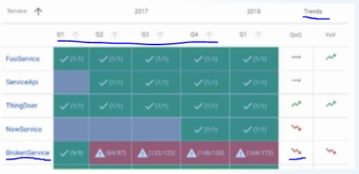
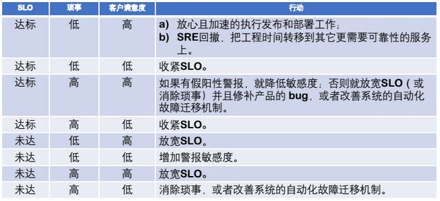

目录 #
SRE 五大根基 之 SLO[1] #
步骤1. 制定SLO #
服务的SLO #
- VALET[Home Depot]
- Volume
- Avail
- Latency
- Errors
- Ticket
数据服务的SLO #
- Go to Page
- {% post_link ‘kafkaSLO’ %}
SLI #
| 服务类型 | SLI类型 |
|---|---|
| 请求驱动 | 可用性，延迟，质量 |
| 流水线 | 时效性，正确率，覆盖率 |
| 存储 | 持久性 |
步骤2. 获得干系人认同 #
SLO 仪表板[趋势] #

步骤3. 持续监控 改进SLO #
- 变更SLO
- 变更SLI实现
- 着手于现实的SLO
- 迭代
步骤4. 错误预算 SLO决策 #
基于SLO和错误预算的决策 #

步骤5. 进阶 #
- 用户旅程建模
- 依赖关系建模
参考 #
- 《Google SRE工作手册》第二期SRE五大根基之一：SLO V ***
- 《Google SRE工作手册》 第二章